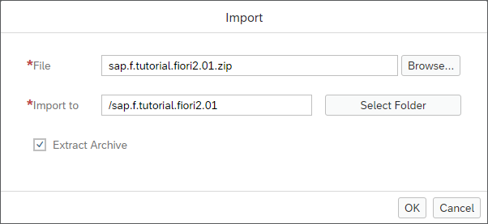
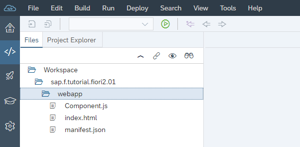

Step 1: Setting Up the Initial App
We start by setting up a basic OpenUI5 app for this tutorial.
The structure in this step will be used throughout the rest of this tutorial. The basic OpenUI5 app created in this step will be extended in the subsequent steps to illustrate the main features of an SAP Fiori 2.0 app.
Prerequisites
You have set up your SAP Web IDE as described under App Development Using SAP Web IDE.
Preview

Create the Initial App Using the SAP Web IDE Import Functionality
-
Download the code for the initial app from the Samples in the Demo Kit at SAP Fiori 2.0 App - Step 1.
-
Launch SAP Web IDE.
-
Choose
 File
File  Import File or Project
Import File or Project
Choose Browse and select the downloaded sap.f.tutorial.fiori2.01.zip file, then choose Open.
Make sure Extract Archive is checked and choose OK.
A new folder sap.ui.demo.fiori2.01 is now available in your local workspace. It contains the following files and folders of the initial app:
-
Run the app by selecting the webapp folder and then
Run Run as Web Application. Keep in mind that there is no content yet and the app
appears as an empty page.
From now on, you can quickly run the app by selecting the root folder sap.ui.demo.fiori2 of your project in SAP Web IDE and pressing the Run button. The system will automatically use the option from the Run menu that you chose last (in this case, the Run index.html option).